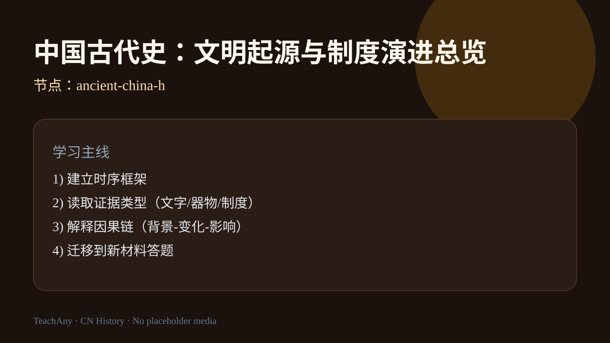
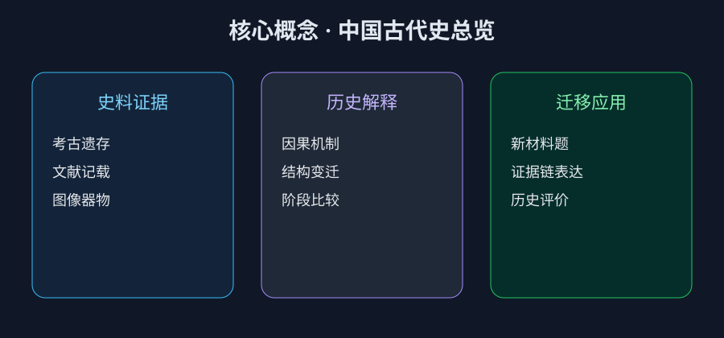
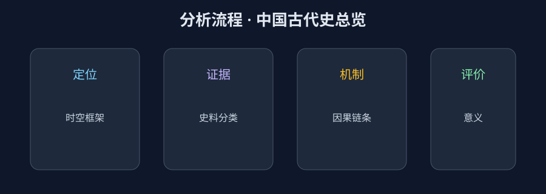

ABT 情境引入
And：你已经知道夏商周、秦汉等朝代名称，也能说出部分重大事件。
But：但做材料题时，常把“事件描述”当成“历史解释”，无法连成因果链。
Therefore：本课用“时空定位—证据分类—机制解释—历史评价”四步法，建立可迁移的答题框架。
建立中国古代史主线框架：文明起源、早期国家、先秦变局、秦汉统一与制度演进。
证据链因果解释迁移应用

本课对应《普通高中历史课程标准（2017年版2020年修订）》中国古代史领域，要求学生在时空中定位重大变革，并用证据解释“制度—经济—文化”之间的互动关系。学习时先建立时间轴，再逐段阅读材料，避免把故事复述当成历史解释。
导入任务：在笔记本上写出“文明起源—早期国家—先秦变局—秦汉统一”四段关键词，并各配一条可核验的史料类型（考古、文献、图像）。错因提示：若只记朝代名而无因果链，材料题容易丢分，需要回到证据本身重新组织解释。
And：你已经知道夏商周、秦汉等朝代名称，也能说出部分重大事件。
But：但做材料题时，常把“事件描述”当成“历史解释”，无法连成因果链。
Therefore：本课用“时空定位—证据分类—机制解释—历史评价”四步法，建立可迁移的答题框架。
点击时代按钮切换疆域版图；悬停高亮边界；点击红色城市标记查看详情。
中国古代史学习中，最优先建立的能力是？


调整“证据完整度”，观察历史解释质量变化。
迁移练习：任选本课一个制度变化，写出“背景—措施—短期效果—长期影响”四步解释，并指出至少两条可反驳的替代解释，训练历史解释的开放性。
答题模板：①时空定位；②证据分类；③因果链；④历史意义。
易错点：只复述史实，不说明“为什么发生、如何影响后续历史”。
例题延伸：若材料只给出“郡县官吏由中央任免”，你应如何把它与“削弱地方世袭权力”联系起来？关键提示：制度文本本身不是结论，必须说明机制。
对比“短视频历史科普”和“高考历史材料题”：前者重情节，后者重证据链与解释力。
例题延伸：若材料只给出“郡县官吏由中央任免”，你应如何把它与“削弱地方世袭权力”联系起来？关键提示：制度文本本身不是结论，必须说明机制。
真实场景：参观博物馆商周展区时，优先观察青铜器纹饰、铭文与伴出器物组合，而不是孤立记住器物名称；把观察结果回填到本课证据分类表。
输入一个历史材料描述，让 AI 生成“证据-机制-结论”草稿；或上传材料截图做结构化诊断。
例题延伸：若材料只给出“郡县官吏由中央任免”，你应如何把它与“削弱地方世袭权力”联系起来？关键提示：制度文本本身不是结论，必须说明机制。
解释“秦汉统一意义”时，应优先组织哪类证据？
例题延伸：若材料只给出“郡县官吏由中央任免”，你应如何把它与“削弱地方世袭权力”联系起来？关键提示：制度文本本身不是结论，必须说明机制。
复述本课主线并标出 3 个关键词。
用 2 条证据解释 1 个历史机制。
迁移到新材料，完成“证据-机制-结论”完整表达。
例题延伸：若材料只给出“郡县官吏由中央任免”，你应如何把它与“削弱地方世袭权力”联系起来？关键提示：制度文本本身不是结论，必须说明机制。
挑战层补充：撰写 150 字“小论文式”段落，必须包含时空定位、两类证据与一句历史评价；教师可用 rubric 从“证据—解释—结论”三项打分。
例题延伸：若材料只给出“郡县官吏由中央任免”，你应如何把它与“削弱地方世袭权力”联系起来？关键提示：制度文本本身不是结论，必须说明机制。
本课小结强调：历史学习不是背诵年代表，而是在时空中组织证据、解释机制并作出有限度的评价；课后请用 5 分钟复盘今日地图观察与材料题错因，并尝试向同学解释一次“制度变化如何影响区域治理”。
视频内容：课程主线、证据框架与迁移任务。